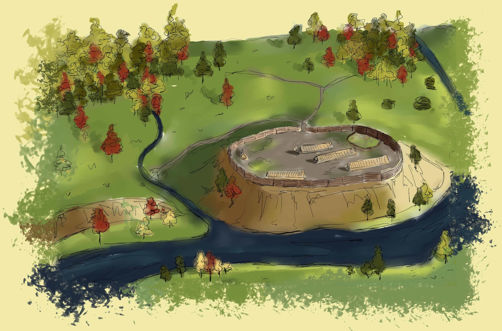
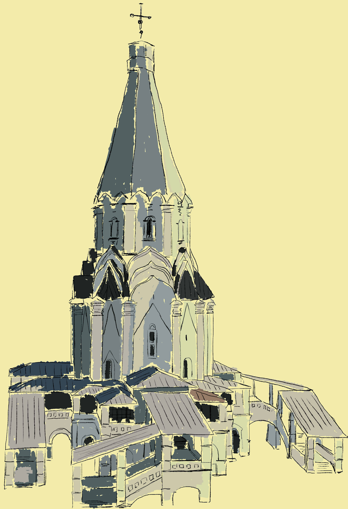
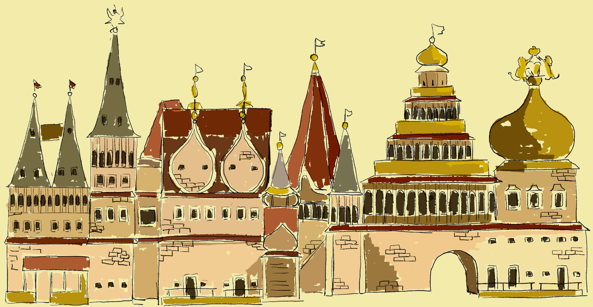
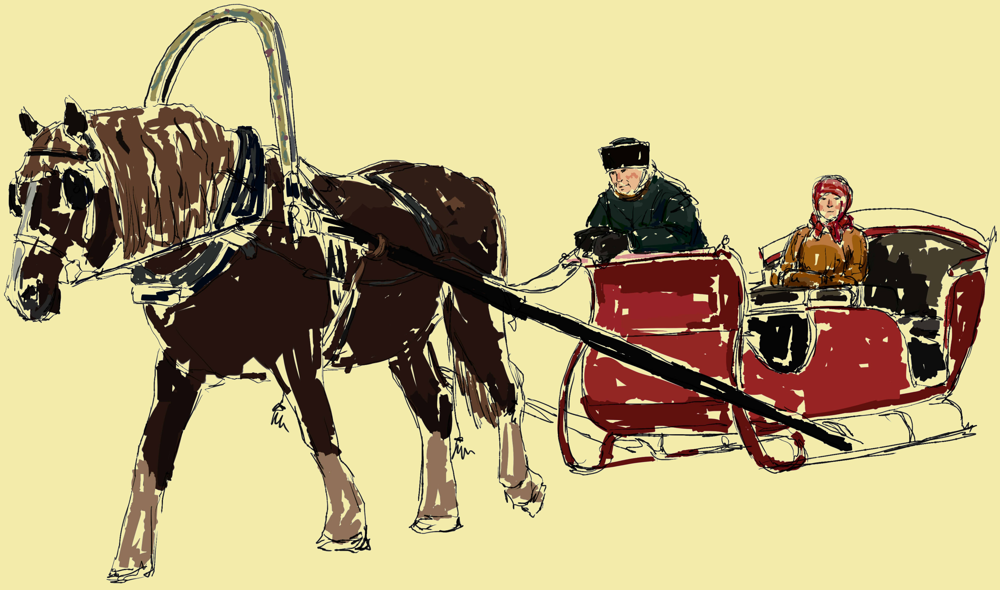

КОЛОМЕНСКОЕ – ОДНО ИЗ САМЫХ ДРЕВНИХ МЕСТ ПРОЖИВАНИЯ ЧЕЛОВЕКА НА
ТЕРРИТОРИИ СОВРЕМЕННОЙ МОСКВЫ.
АРХЕОЛОГИЧЕСКИЕ ПАМЯТНИКИ,
РАСПОЛОЖЕННЫЕ В ЕГО ОКРЕСТНОСТЯХ, СВИДЕТЕЛЬСТВУЮТ О ПРЕБЫВАНИИ ЗДЕСЬ ЛЮДЕЙ
КАМЕННОГО ВЕКА (V–III ТЫС. ДО Н.Э.). В I ТЫС. ДО Н.Э. НА БЕРЕГАХ МОСКВЫ-РЕКИ И ЕЕ ПРИТОКОВ, В РАЙОНЕ БУДУЩИХ СЕЛ
ДЬЯКОВА И КОЛОМЕНСКОГО, ВОЗНИКАЮТ МНОГОЧИСЛЕННЫЕ НЕУКРЕПЛЕННЫЕ ПОСЕЛЕНИЯ («СЕЛИЩА») ДРЕВНЕГО ФИННО-УГОРСКОГО ПЛЕМЕНИ.
СЕЛО КОЛОМЕНСКОЕ НАХОДИЛОСЬ НА ПУТИ ИЗ МОСКВЫ В КОЛОМНУ. ЛЕГЕНДА ГОВОРИТ, ЧТО ОСНОВАЛИ ЕГО ЖИТЕЛИ КОЛОМНЫ, СПАСАВШИЕСЯ БЕГСТВОМ ОТ ВОЙСК БАТЫЯ. ВНАЧАЛЕ СЕЛО ЯВЛЯЛОСЬ ВОТЧИНОЙ ВЕЛИКИХ КНЯЗЕЙ, А ЗАТЕМ РУССКИХ ЦАРЕЙ.
АРХЕОЛОГИЧЕСКИЕ НАХОДКИ, ОБНАРУЖЕННЫЕ ПРИ РАСКОПКАХ В ОКРЕСТНОСТЯХ КОЛОМЕНСКОГО ОТНОСЯТСЯ К 5-3 ВЕКАМ ДО НАШЕЙ ЭРЫ. В ДЬЯКОВО – НЕДАЛЕКО ОТ ЦЕНТРАЛЬНОЙ ЧАСТИ УСАДЬБЫ ЗДЕСЬ РАСПОЛАГАЛОСЬ ДРЕВНЕЕ ГОРОДИЩЕ, ДАВШЕЕ НАЗВАНИЕ АРХЕОЛОГИЧЕСКОЙ КУЛЬТУРЕ. НЕ ТАК ДАВНО НА ТЕРРИТОРИИ КОЛОМЕНСКОГО БЫЛИ ТАКЖЕ ОБНАРУЖЕНЫ СЛЕДЫ ПОСЕЛЕНИЯ ПЕРИОДА РАННЕГО СРЕДНЕВЕКОВЬЯ (8-10 ВЕКА), А ТАКЖЕ СЕЛИЩЕ ДЬЯКОВО-ПОЙМА, ОТНОСЯЩЕЕСЯ К 11-12 ВЕКАМ.
 ДРЕВНЕЙШИЙ ПАМЯТНИК ГОСУДАРЕВА ДВОРА В КОЛОМЕНСКОМ – ЦЕРКОВЬ ВОЗНЕСЕНИЯ ГОСПОДНЯ – ВПЕРВЫЕ УПОМЯНУТ В 1532 Г. ПО ЛЕГЕНДЕ, ХРАМ БЫЛ ВОЗВЕДЕН В ЧЕСТЬ РОЖДЕНИЯ НАСЛЕДНИКА ВАСИЛИЯ III – БУДУЩЕГО ЦАРЯ ИВАНА IV ГРОЗНОГО. C 14 ВЕКА КОЛОМЕНСКОЕ СТАНОВИТСЯ ЛЕТНЕЙ ЗАГОРОДНОЙ УСАДЬБОЙ МОСКОВСКИХ ПРАВИТЕЛЕЙ, А В ПЕРИОД С 16 ПО 17 ВЕК В УСАДЬБЕ ФОРМИРУЕТСЯ УНИКАЛЬНЫЙ АРХИТЕКТУРНЫЙ АНСАМБЛЬ. В 1528-1532 ГОДАХ НА БЕРЕГУ МОСКВЫ-РЕКИ ВАСИЛИЙ III ПОСТРОИЛ ОДИН ИЗ ПЕРВЫХ ШАТРОВЫХ ХРАМОВ НА РУСИ – ЦЕРКОВЬ ВОЗНЕСЕНИЯ ГОСПОДНЯ. ПО ПРЕДПОЛОЖЕНИЯМ ИССЛЕДОВАТЕЛЕЙ, ЦЕРКОВЬ БЫЛА ЗАЛОЖЕНА ДЛЯ МОЛЕНИЙ О ЧАДОРОДИИ. ЭТОТ ХРАМ БОЛЕЕ 100 ЛЕТ БЫЛ ЛЕТНЕЙ ДОМОВОЙ ЦЕРКОВЬЮ РУССКИХ ГОСУДАРЕЙ.
")
СРЕДИ ПАМЯТНИКОВ ИСТОРИИ И АРХИТЕКТУРЫ, РАСПОЛОЖЕННЫХ НА ТЕРРИТОРИИ КОЛОМЕНСКОГО И ЦЕРКОВЬ УСЕКНОВЕНИЯ ГЛАВЫ ИОАННА ПРЕДТЕЧИ, ПОСТРОЕННАЯ ИВАНОМ ГРОЗНЫМ В 1547-1554 ГОДАХ. ЭТОТ ХРАМ ЯВЛЯЕТСЯ ПРООБРАЗОМ СОБОРА ВАСИЛИЯ БЛАЖЕННОГО НА КРАСНОЙ ПЛОЩАДИ И, СКОРЕЕ ВСЕГО, ЕГО СТРОИЛИ ТЕ ЖЕ МАСТЕРА. В 1606 Г. В КОЛОМЕНСКОМ РАСПОЛАГАЛАСЬ СТАВКА ИВАНА БОЛОТНИКОВА, В 1610 Г. — ЛЖЕДМИТРИЯ II. ТОЧНАЯ ДАТА СОЗДАНИЯ НЕИЗВЕСТНА - СПОРЫ О НЕЙ НЕ УТИХАЮТ ДО СИХ ПОР. ОДНАКО, ПРИНЯТО СЧИТАТЬ, ЧТО ХРАМ, ГЛАВНЫЙ ПРЕСТОЛ КОТОРОГО БЫЛ ОСВЯЩЕН В ЧЕСТЬ УСЕКНОВЕНИЯ ГЛАВЫ ИОАННА ПРЕДТЕЧИ, БЫЛ ВОЗВЕДЕН В 1547 ГОДУ В СЕЛЕ ДЬЯКОВО, В ГОД КОРОНАЦИИ ИВАНА IV НА ЦАРСТВО.
БОЛЕЕ ЧЕТЫРЕХ ВЕКОВ ХРАМ ВОСХИЩАЕТ СВОЕЙ ГАРМОНИЧНОСТЬЮ И КРАСОТОЙ. ЦЕРКОВЬ УСЕКНОВЕНИЯ ГЛАВЫ ИОАННА ПРЕДТЕЧИ В ДЬЯКОВЕ ПЕРЕЖИЛА ПЕРИОД РЕВОЛЮЦИИ, ВОИН И К СЧАСТЬЮ, НЕ БЫЛА ВЗОРВАНА ВО ВРЕМЕНА ГОНЕНИЯ НА РЕЛИГИЮ. И СЕЙЧАС У НАС ЕСТЬ ВОЗМОЖНОСТЬ ВОСХИЩАТЬСЯ ЭТИМ ПАМЯТНИКОМ ИСТОРИИ И АРХИТЕКТУРЫ ВРЕМЕН ИВАНА ГРОЗНОГО.
УЖЕ ПРИ ЦАРЕ МИХАИЛЕ ФЕДОРОВИЧЕ КОЛОМЕНСКОЕ СТАЛО ИЗЛЮБЛЕННОЙ ЛЕТНЕЙ РЕЗИДЕНЦИЕЙ ПРАВИВШЕЙ ФАМИЛИИ. ДАЛЬНЕЙШАЯ ИСТОРИЯ ГОСУДАРЕВА ДВОРА В КОЛОМЕНСКОМ – ПРЕВРАЩЕНИЕ ЕГО В ПАРАДНУЮ ЛЕТНЮЮ РЕЗИДЕНЦИЮ, СВОЕОБРАЗНЫЙ «ПОДМОСКОВНЫЙ КРЕМЛЬ». В ПЕРИОД ЦАРСТВОВАНИЯ АЛЕКСЕЯ МИХАЙЛОВИЧА КОЛОМЕНСКОЕ РАСЦВЕЛО. В ТЕЧЕНИЕ ТРИДЦАТИ ЛЕТ СВОЕГО ПРАВЛЕНИЯ ОН КАЖДОЕ ЛЕТО ПРИЕЗЖАЛ НА ОТДЫХ В УСАДЬБУ. ПОНАЧАЛУ МОЛОДОЙ ГОСУДАРЬ ИСПОЛЬЗОВАЛ ИМЕНИЕ ВСЕ БОЛЬШЕ ДЛЯ СОКОЛИНОЙ ОХОТЫ, НО ПОЗЖЕ КОЛОМЕНСКОЕ ПРЕВРАТИЛОСЬ В РОСКОШНУЮ ЦАРСКУЮ РЕЗИДЕНЦИЮ. В 1667 ГОДУ БЫЛО НАЧАТО СТРОИТЕЛЬСТВО ОГРОМНОГО ДЕРЕВЯННОГО ДВОРЦА НА 270 ПОМЕЩЕНИЙ. ДВОРЕЦ БЫЛ ПОСТРОЕН ВСЕГО ЗА ОДИН ГОД. В ЕГО СОСТАВ ВХОДИЛИ: ДЕРЕВЯННЫЕ ХОРОМЫ С ДОМОВОЙ КАЗАНСКОЙ ЦЕРКОВЬЮ, СЫТНЫЙ, КОРМОВОЙ, ХЛЕБНЫЙ ИЛИ ХЛЕБЕННЫЙ ДВОРЫ ИЛИ ДВОРЦЫ, ПРИКАЗНЫЕ ПАЛАТЫ, ПОЛКОВНИЧЬИ ПАЛАТЫ И КАРАУЛЬНИ. ЦАРСКИЙ ДВОР ОКРУЖИЛИ ОГРАДОЙ С ТРЕМЯ ВОРОТАМИ, А ВОКРУГ БЫЛИ РАЗБИТЫ САДЫ. ЭТОТ ДВОРЕЦ НАЗЫВАЛИ ВОСЬМЫМ ЧУДОМ СВЕТА, ОН ВОПЛОЩАЛ В СЕБЕ ВСЕ ЛУЧШИЕ ТРАДИЦИИ ДЕРЕВЯННОГО ЗОДЧЕСТВА.
ПОСЛЕ ТОГО, КАК СТОЛИЦА БЫЛА ПЕРЕНЕСЕНА ИЗ МОСКВЫ В САНКТ-ПЕТЕРБУРГ, КОЛОМЕНСКОЕ ПРИХОДИТ В ЗАПУСТЕНИЕ, А ПРИ ЕКАТЕРИНЕ II ОБВЕТШАВШИЙ ДЕРЕВЯННЫЙ ДВОРЕЦ И ВОВСЕ РАЗОБРАЛИ. В 1766-1767 ГОДАХ КНЯЗЬ П.В. МАКУЛОВ ПО СВОИМ ЧЕРТЕЖАМ ПОСТРОИЛ НОВЫЙ ДВОРЕЦ В ЧЕТЫРЕ ЭТАЖА НАПРОТИВ ЦЕРКВИ ВОЗНЕСЕНИЯ ГОСПОДНЯ. ДВА НИЖНИХ ЭТАЖА БЫЛИ КАМЕННЫМИ, А ДВА ВЕРХНИХ – ДЕРЕВЯННЫМИ, ПРИЧЕМ, ДЛЯ СТРОИТЕЛЬСТВА БЫЛИ ИСПОЛЬЗОВАНЫ МАТЕРИАЛЫ, ОСТАВШИЕСЯ ОТ РАЗОБРАННОГО СТАРОГО ДЕРЕВЯННОГО ДВОРЦА. ТАКЖЕ БЫЛ НАДСТРОЕН ВТОРОЙ ЭТАЖ НАД ОСТАЛЬНЫМ АНСАМБЛЕМ 17 ВЕКА, КОТОРЫЙ ПРИСПОСОБИЛИ ПОД КУХНИ. ПОЗЖЕ ДВОРЕЦ НЕСКОЛЬКО РАЗ ЧАСТИЧНО РАЗБИРАЛСЯ И ПЕРЕСТРАИВАЛСЯ. В ПОСЛЕДНИЙ РАЗ ЕГО РАЗОБРАЛИ В 1872 ГОДУ, ОСТАВИВ ТОЛЬКО ОДИН ФЛИГЕЛЬ.
ПО ИНИЦИАТИВЕ АРХИТЕКТОРА-РЕСТАВРАТОРА П.Д. БАРАНОВСКОГО НА ТЕРРИТОРИИ КОЛОМЕНСКОГО В 1923 ГОДУ БЫЛ ОРГАНИЗОВАН МУЗЕЙ ДЕРЕВЯННОГО ЗОДЧЕСТВА. В КОНЦЕ 20-Х ГОДОВ 20 ВЕКА СЮДА СТАЛИ СВОЗИТЬ СТАРИННЫЕ ДЕРЕВЯННЫЕ СТРОЕНИЯ, ИМЕЮЩИЕ ИСТОРИЧЕСКУЮ И КУЛЬТУРНУЮ ЦЕННОСТЬ. ТАК В КОЛОМЕНСКОМ ПОЯВИЛАСЬ МЕДОВАРНЯ ИЗ СЕЛА ПРЕОБРАЖЕНСКОГО, ДОМИК ПЕТРА I ИЗ АРХАНГЕЛЬСКА, МОХОВАЯ БАШНЯ СУМСКОГО ОСТРОГА, СВЯТЫЕ ВРАТА НИКОЛО-КОРЕЛЬСКОГО МОНАСТЫРЯ, А ТАКЖЕ МНОГОЕ ДРУГОЕ. КОНЕЧНО, ДЛЯ СОЗДАНИЯ ПОЛНОЦЕННОГО МУЗЕЯ ЗАПОВЕДНИКА НУЖНО БЫЛО СЛЕДОВАТЬ ПРОЕКТУ С.А. ГАВРИЛОВА, ПРЕДЛАГАВШЕГО СОЗДАВАТЬ МУЗЕЙ НА ПРАВОМ БЕРЕГУ РЕКИ ЖУЖЖИ, ГДЕ МОЖНО БЫЛО ВОССОЗДАТЬ НЕОБХОДИМЫЙ МИКРОРЕЛЬЕФ МЕСТНОСТИ, НО ОСНОВАТЕЛИ МУЗЕЯ РЕШИЛИ ПРИБЕГНУТЬ К УСЕЧЕННОМУ ВАРИАНТУ, ПРЕДЛОЖЕННОМУ В.М. БОДУНОВЫМ.
ВПЛОТЬ ДО 80-Х ГОДОВ 20 СТОЛЕТИЯ НА ТЕРРИТОРИИ МУЗЕЯ ПРОДОЛЖАЛО СУЩЕСТВОВАТЬ СЕЛО КОЛОМЕНСКОЕ, ЗАСЕЛЕННОЕ ЖИТЕЛЯМИ, НАЧАВШИМИ СВОЙ РОД СО ВРЕМЕН ДВОРОВЫХ ЛЮДЕЙ ЦАРЯ АЛЕКСЕЯ МИХАЙЛОВИЧА. ВОЗРАСТ НЕКОТОРЫХ ЖИЛЫХ СТРОЕНИЙ ДОСТИГАЛ 300 ЛЕТ. НА ЭТИХ ДОМАХ БЫЛИ УКРЕПЛЕНЫ ТАБЛИЧКИ, СВИДЕТЕЛЬСТВУЮЩИЕ, ЧТО ЗДАНИЯ НАХОДЯТСЯ ПОД ОХРАНОЙ ГОСУДАРСТВА, НО ПОСЛЕ ТОГО, КАК ЖИТЕЛЕЙ ПЕРЕСЕЛИЛИ, ЭТИ ДОМА ПРИШЛИ В УПАДОК, ЧАСТЬ ИЗ НИХ СГОРЕЛА, А ЧАСТЬ БЫЛА РАЗОБРАНА.
НЫНЕШНИЙ ГОСУДАРСТВЕННЫЙ ХУДОЖЕСТВЕННЫЙ ИСТОРИКО-АРХИТЕКТУРНЫЙ И ПРИРОДНО-ЛАНДШАФТНЫЙ МУЗЕЙ-ЗАПОВЕДНИК КОЛОМЕНСКОЕ ЗАНИМАЕТ ПЛОЩАДЬ 390 ГЕКТАРОВ. РАСПОЛАГАЕТСЯ КОЛОМЕНСКОЕ К ЮГУ ОТ ЦЕНТРА МОСКВЫ. В КОЛОМЕНСКОМ, В КАЗАНСКОМ ХРАМЕ, ПРЕБЫВАЕТ ОДНА ИЗ ПОЧИТАЕМЫХ В РОССИИ ИКОН БОГОРОДИЦЫ — ДЕРЖАВНАЯ. ХРАМ СЕЙЧАС НАХОДИТСЯ В ОБЩЕМ ПОЛЬЗОВАНИИ МУЗЕЯ И ПАТРИАРХИИ. В 1994 ГОДУ ЭТОТ ХРАМ БЫЛ ВКЛЮЧЕН В СПИСОК ВСЕМИРНОГО НАСЛЕДИЯ ЮНЕСКО.
В ПОСЛЕДНИЕ ГОДЫ В КОЛОМЕНСКОМ ПРОВОДИТСЯ АКТИВНАЯ РАБОТА ПО РЕКОНСТРУКЦИИ ИМЕЮЩЕЙСЯ ИСТОРИЧЕСКОЙ ЗАСТРОЙКИ. ГЛАВНОЙ ЗАДАЧЕЙ РУКОВОДСТВА И РАБОТНИКОВ УСАДЬБЫ-МУЗЕЯ ЯВЛЯЕТСЯ ВОВЛЕЧЕНИЕ ПОСЕТИТЕЛЕЙ В ЖИЗНЬ ИМЕНИЯ, ПОГРУЖЕНИЕ В АТМОСФЕРУ СТАРИНЫ. В МУЗЕЕ СУЩЕСТВУЮТ РАЗЛИЧНЫЕ ЭКСКУРСИОННО-ХУДОЖЕСТВЕННЫЕ ПРОГРАММЫ, ТРАДИЦИОННЫЕ СТАРИННЫЕ РАЗВЛЕЧЕНИЯ, НА ТЕРРИТОРИИ УСАДЬБЫ РЕГУЛЯРНО ПРОХОДЯТ ВСЕВОЗМОЖНЫЕ МАССОВЫЕ ПРАЗДНИКИ. ПОМИМО ДРЕВНИХ ПАМЯТНИКОВ ИСТОРИИ И АРХИТЕКТУРЫ, КОЛОМЕНСКОЕ СОХРАНИЛО ЕСТЕСТВЕННЫЙ ЛАНДШАФТ. БОЛЬШУЮ ЧАСТЬ ТЕРРИТОРИИ ЗАНИМАЮТ ЖИВОПИСНЫЕ ПАРКИ, ОВРАГИ, ХОЛМЫ, ИЗ КОЛОМЕНСКОГО ОТКРЫВАЕТСЯ УДИВИТЕЛЬНЫЙ ПО КРАСОТЕ ВИД НА МОСКВУ-РЕКУ.